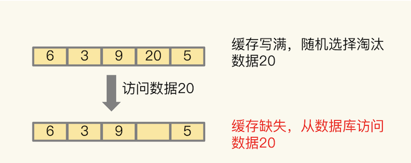
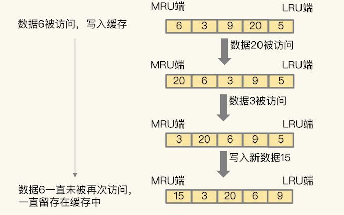
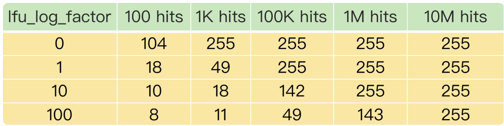

第四节 缓存被污染的解决问题
1、缓存污染
那什么是缓存污染呢？在一些场景下，有些数据被访问的次数非常少，甚至只会被访问一次。当这些数据服务完访问请求后，如果还继续留存在缓存中的话，就只会白白占用缓存空间。这种情况，就是缓存污染。
当缓存污染不严重时，只有少量数据占据缓存空间，此时，对缓存系统的影响不大。
但是，缓存污染一旦变得严重后，就会有大量不再访问的数据滞留在缓存中。如果这时数据占满了缓存空间，我们再往缓存中写入新数据时，就需要先把这些数据逐步淘汰出缓存，这就会引入额外的操作时间开销，进而会影响应用的性能。
2、如何解决缓存污染问题？
8 种数据淘汰策略
它们分别是 noeviction、volatile-random、volatile-ttl、volatile-lru、volatile-lfu、allkeys-lru、allkeys-random 和 allkeys-lfu 策略。
在这 8 种策略中，noeviction 策略是不会进行数据淘汰的。所以，它肯定不能用来解决缓存污染问题。其他的 7 种策略，都会按照一定的规则来淘汰数据。
因为 LRU 算法是我们在缓存数据淘汰策略中广泛应用的算法，所以我们先分析其他策略，然后单独分析淘汰策略使用 LRU 算法的情况，最后再学习下 LFU 算法用于淘汰策略时，对缓存污染的应对措施。
使用 LRU 算法和 LFU 算法的策略各有两种（volatile-lru 和 allkeys-lru，以及 volatile-lfu 和 allkeys-lfu），为了便于理解，接下来我会统一把它们叫作 LRU 策略和 LFU 策略。
2-1 volatile-random 和 allkeys-random
它们都是采用随机挑选数据的方式，来筛选即将被淘汰的数据。
既然是随机挑选，那么 Redis 就不会根据数据的访问情况来筛选数据。
如果被淘汰的数据又被访问了，就会发生缓存缺失。也就是说，应用需要到后端数据库中访问这些数据，降低了应用的请求响应速度。所以，volatile-random 和 allkeys-random 策略，在避免缓存污染这个问题上的效果非常有限。
我给你举个例子吧。如下图所示，假设我们配置 Redis 缓存使用 allkeys-random 淘汰策略，当缓存写满时，allkeys-random 策略随机选择了数据 20 进行淘汰。不巧的是，数据 20 紧接着又被访问了，此时，Redis 就会发生了缓存缺失。

继续看 volatile-ttl 策略是否能有效应对缓存污染。volatile-ttl 针对的是设置了过期时间的数据，把这些数据中剩余存活时间最短的筛选出来并淘汰掉。
虽然 volatile-ttl 策略不再是随机选择淘汰数据了，但是剩余存活时间并不能直接反映数据再次访问的情况。所以，按照 volatile-ttl 策略淘汰数据，和按随机方式淘汰数据类似，也可能出现数据被淘汰后，被再次访问导致的缓存缺失问题。
例外的情况：业务应用在给数据设置过期时间的时候，就明确知道数据被再次访问的情况，并根据访问情况设置过期时间。
此时，Redis 按照数据的剩余最短存活时间进行筛选，是可以把不会再被访问的数据筛选出来的，进而避免缓存污染。例如，业务部门知道数据被访问的时长就是一个小时，并把数据的过期时间设置为一个小时后。这样一来，被淘汰的数据的确是不会再被访问了。
小结:
除了在明确知道数据被再次访问的情况下，volatile-ttl可以有效避免缓存污染。在其他情况下，volatile-random、allkeys-random、volatile-ttl 这三种策略并不能应对缓存污染问题。
再分别分析下 LRU 策略，以及 Redis 4.0 后实现的 LFU 策略。LRU 策略会按照数据访问的时效性，来筛选即将被淘汰的数据，应用非常广泛。
3、LRU 缓存策略
LRU 策略的核心思想：如果一个数据刚刚被访问，那么这个数据肯定是热数据，还会被再次访问。
Redis 中的 LRU 策略，会在每个数据对应的 RedisObject 结构体中设置一个 lru 字段，用来记录数据的访问时间戳。
在进行数据淘汰时，LRU 策略会在候选数据集中淘汰掉 lru 字段值最小的数据（也就是访问时间最久的数据）。
所以，在数据被频繁访问的业务场景中，LRU 策略的确能有效留存访问时间最近的数据。而且，因为留存的这些数据还会被再次访问，所以又可以提升业务应用的访问速度。
但是，也正是因为只看数据的访问时间，使用 LRU 策略在处理扫描式单次查询操作时，无法解决缓存污染。
所谓的扫描式单次查询操作，就是指应用对大量的数据进行一次全体读取，每个数据都会被读取，而且只会被读取一次。此时，因为这些被查询的数据刚刚被访问过，所以 lru 字段值都很大。
在使用 LRU 策略淘汰数据时，这些数据会留存在缓存中很长一段时间，造成缓存污染。 如果查询的数据量很大，这些数据占满了缓存空间，却又不会服务新的缓存请求，此时，再有新数据要写入缓存的话，还是需要先把这些旧数据替换出缓存才行，这会影响缓存的性能。
如下图所示，数据 6 被访问后，被写入 Redis 缓存。但是，在此之后，数据 6 一直没有被再次访问，这就导致数据 6 滞留在缓存中，造成了污染。

所以，对于采用了 LRU 策略的 Redis 缓存来说，扫描式单次查询会造成缓存污染。为了应对这类缓存污染问题，Redis 从 4.0 版本开始增加了 LFU 淘汰策略。
与 LRU 策略相比，LFU （Frequent）策略中会从两个维度来筛选并淘汰数据：
- 一是，数据访问的时效性（访问时间离当前时间的远近）；
- 二是，数据的被访问次数。
4、LFU 缓存策略的优化
4-1 LFU介绍
LFU 缓存策略是在 LRU 策略基础上，为每个数据增加了一个计数器，来统计这个数据的访问次数。
当使用 LFU 策略筛选淘汰数据时，
- 首先会根据数据的访问次数进行筛选，把访问次数最低的数据淘汰出缓存。
- 如果两个数据的访问次数相同，LFU 策略再比较这两个数据的访问时效性，把距离上一次访问时间更久的数据淘汰出缓存。
和那些被频繁访问的数据相比，扫描式单次查询的数据因为不会被再次访问，所以它们的访问次数不会再增加。因此，LFU 策略会优先把这些访问次数低的数据淘汰出缓存。这样一来，LFU 策略就可以避免这些数据对缓存造成污染了。
4-2 LFU 策略具体又是如何实现的呢
为了避免操作链表的开销，Redis 在实现 LRU 策略时使用了两个近似方法：
- Redis 是用 RedisObject 结构来保存数据的，RedisObject 结构中设置了一个 lru 字段，用来记录数据的访问时间戳；
- Redis 并没有为所有的数据维护一个全局的链表，而是通过随机采样方式，选取一定数量（例如 10 个）的数据放入候选集合，后续在候选集合中根据 lru 字段值的大小进行筛选。
在此基础上，Redis 在实现 LFU 策略的时候，只是把原来 24bit 大小的 lru 字段，又进一步拆分成了两部分。
- ldt 值：lru 字段的前 16bit，表示数据的访问时间戳；
- counter 值：lru 字段的后 8bit，表示数据的访问次数。
Redis 只使用了 8bit 记录数据的访问次数，而 8bit 记录的最大值是 255，这样可以吗？
在实际应用中，一个数据可能会被访问成千上万次。如果每被访问一次，counter 值就加 1 的话，那么，只要访问次数超过了 255，数据的 counter 值就一样了。在进行数据淘汰时，LFU 策略就无法很好地区分并筛选这些数据，反而还可能会把不怎么访问的数据留存在了缓存中。
假设第一个数据 A 的累计访问次数是 256，访问时间戳是 202010010909，所以它的 counter 值为 255，而第二个数据 B 的累计访问次数是 1024，访问时间戳是 202010010810。如果 counter 值只能记录到 255，那么数据 B 的 counter 值也是 255。
此时，缓存写满了，Redis 使用 LFU 策略进行淘汰。数据 A 和 B 的 counter 值都是 255，LFU 策略再比较 A 和 B 的访问时间戳，发现数据 B 的上一次访问时间早于 A，就会把 B 淘汰掉。但其实数据 B 的访问次数远大于数据 A，很可能会被再次访问。这样一来，使用 LFU 策略来淘汰数据就不合适了。
Redis 也注意到了这个问题。因此，在实现 LFU 策略时，Redis 并没有采用数据每被访问一次，就给对应的 counter 值加 1 的计数规则，而是采用了一个更优化的计数规则。
LFU 策略实现的计数规则是：每当数据被访问一次时，
- 首先，用计数器当前的值乘以配置项
lfu_log_factor再加 1，再取其倒数，得到一个 p 值； - 然后，把这个
p值和一个取值范围在`（0，1）间的随机数 r 值比大小，只有 p 值大于 r 值时，计数器才加 1。
Redis 的部分源码，显示了 LFU 策略增加计数器值的计算逻辑。其中，baseval 是计数器当前的值。计数器的初始值默认是 5（由代码中的 LFU_INIT_VAL 常量设置），而不是 0，这样可以避免数据刚被写入缓存，就因为访问次数少而被立即淘汰
double r = (double)rand()/RAND_MAX;
...
double p = 1.0/(baseval*server.lfu_log_factor+1);
if (r < p) counter++;
使用了这种计算规则后，我们可以通过设置不同的 lfu_log_factor 配置项，来控制计数器值增加的速度，避免 counter 值很快就到 255 了。
为了更进一步说明 LFU 策略计数器递增的效果.这是 Redis官网上提供的一张表，它记录了当 lfu_log_factor 取不同值时，在不同的实际访问次数情况下，计数器的值是如何变化的。

可以看到，
- 当
lfu_log_factor取值为 1 时，实际访问次数为 100K 后，counter 值就达到 255 了，无法再区分实际访问次数更多的数据了。 - 而当
lfu_log_factor取值为 100 时，当实际访问次数为 10M 时，counter 值才达到 255，此时，实际访问次数小于 10M 的不同数据都可以通过 counter 值区分出来。
正是因为使用了非线性递增的计数器方法，即使缓存数据的访问次数成千上万，LFU 策略也可以有效地区分不同的访问次数，从而进行合理的数据筛选。
从刚才的表中，我们可以看到，当 lfu_log_factor 取值为 10 时，百、千、十万级别的访问次数对应的 counter 值已经有明显的区分了，
所以，我们在应用 LFU 策略时，一般可以将 lfu_log_factor 取值为 10
4-3 LFU counter 值的衰减机制
应用负载的情况是很复杂的。在一些场景下，有些数据在短时间内被大量访问后就不会再被访问了。那么再按照访问次数来筛选的话，这些数据会被留存在缓存中，但不会提升缓存命中率。
为此，Redis 在实现 LFU 策略时，还设计了一个 counter 值的衰减机制。
简单来说，LFU 策略使用衰减因子配置项 lfu_decay_time 来控制访问次数的衰减。
LFU 策略会计算当前时间和数据最近一次访问时间的差值，并把这个差值换算成以分钟为单位。然后，LFU 策略再把这个差值除以lfu_decay_time值，所得的结果就是数据 counter 要衰减的值。
简单举个例子，假设 lfu_decay_time 取值为 1，如果数据在 N 分钟内没有被访问，那么它的访问次数就要减 N。如果 lfu_decay_time 取值更大，那么相应的衰减值会变小，衰减效果也会减弱。
所以，如果业务应用中有短时高频访问的数据的话，建议把 lfu_decay_time 值设置为 1，这样一来，LFU 策略在它们不再被访问后，会较快地衰减它们的访问次数，尽早把它们从缓存中淘汰出去，避免缓存污染。
5、本节小结
如何解决缓存污染
缓存污染问题指的是留存在缓存中的数据，实际不会被再次访问了，但是又占据了缓存空间。如果这样的数据体量很大，甚至占满了缓存，每次有新数据写入缓存时，还需要把这些数据逐步淘汰出缓存，就会增加缓存操作的时间开销。
要解决缓存污染问题，最关键的技术点就是能识别出这些只访问一次或是访问次数很少的数据，在淘汰数据时，优先把它们筛选出来并淘汰掉。
volatile-random 和 allkeys-random 是随机选择数据进行淘汰，无法把不再访问的数据筛选出来，可能会造成缓存污染。
如果业务层明确知道数据的访问时长，可以给数据设置合理的过期时间，再设置 Redis 缓存使用 volatile-ttl 策略。当缓存写满时，剩余存活时间最短的数据就会被淘汰出缓存，避免滞留在缓存中，造成污染。
当我们使用 LRU 策略时，由于 LRU 策略只考虑数据的访问时效，对于只访问一次的数据来说，LRU 策略无法很快将其筛选出来。而 LFU 策略在 LRU 策略基础上进行了优化，在筛选数据时，首先会筛选并淘汰访问次数少的数据，然后针对访问次数相同的数据，再筛选并淘汰访问时间最久远的数据。
在具体实现上，相对于 LRU 策略，Redis 只是把原来 24bit 大小的 lru 字段，又进一步拆分成了 16bit 的 ldt 和 8bit 的 counter，分别用来表示数据的访问时间戳和访问次数。为了避开 8bit 最大只能记录 255 的限制，LFU 策略设计使用非线性增长的计数器来表示数据的访问次数。
在实际业务应用中，LRU 和 LFU 两个策略都有应用。LRU 和 LFU 两个策略关注的数据访问特征各有侧重，LRU 策略更加关注数据的时效性，而 LFU 策略更加关注数据的访问频次
通常情况下，实际应用的负载具有较好的时间局部性，所以 LRU 策略的应用会更加广泛。但是，在扫描式查询的应用场景中，LFU 策略就可以很好地应对缓存污染问题了，建议你优先使用。
外，如果业务应用中有短时高频访问的数据，除了 LFU 策略本身会对数据的访问次数进行自动衰减以外，我再给你个小建议：你可以优先使用 volatile-lfu策略，并根据这些数据的访问时限设置它们的过期时间，以免它们留存在缓存中造成污染